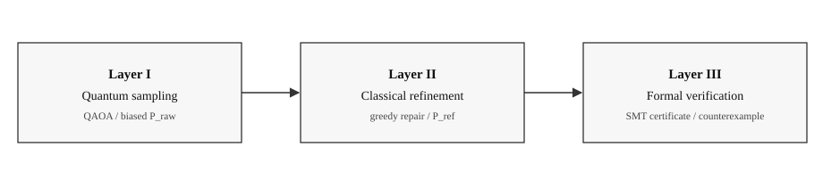
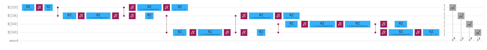
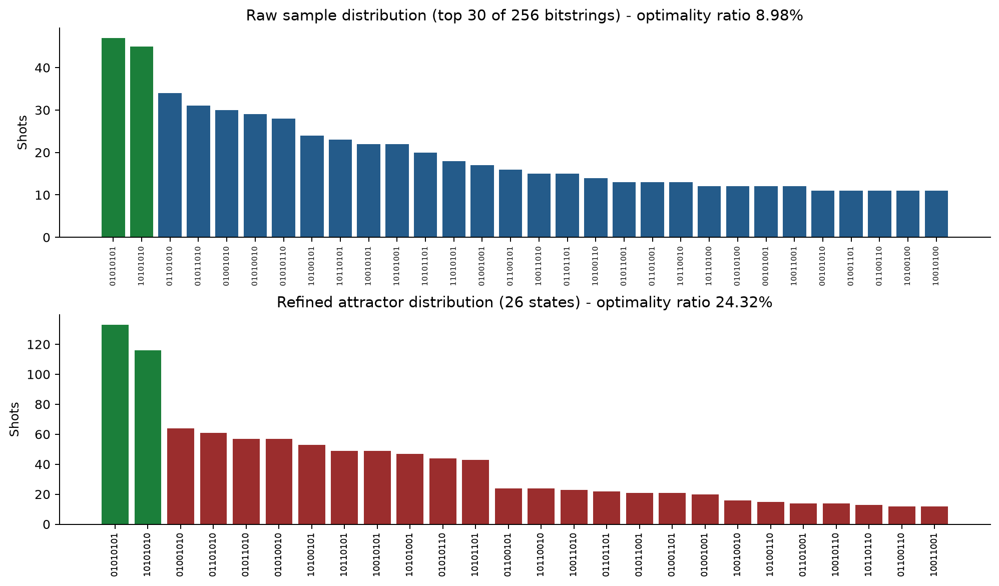

Hybrid Quantum Optimization
1 Krypur Quantum R&D, Kryptur OU, Research and Development
2 Data T Research Org, Project Infrastructure
3 AE Quantum Research Division, Digital and Cloud Networks (DCN)
4 Zius Quantum R&D Center, Quantum and AI
5 Borel Sigma Data Center, data stewardship
* Corresponding author. Main author: Raja Ram M. Contributors: Muskan S, Vipul Jain, Kalinga Swain.
Table 1. Author roles and contributing organizations
| No. | Name | Role | Organization |
|---|---|---|---|
| 1 | Raja Ram M | Main author; R&D | Kryptur OU / Krypur Quantum R&D |
| 2 | Muskan S | Contributor; project infrastructure | Data T Research Org |
| 3 | Vipul Jain | Contributor; digital and cloud networks | AE Quantum Research Division (DCN) |
| 4 | Kalinga Swain | Contributor; quantum and AI | Zius Quantum R&D Center |
| 5 | - | Data manager | Borel Sigma Data Center |
Identifiers are linked from the ORCID icons beside each name. The persistent DOI is marked in the vertical margin.
Keywords:
hybrid quantum-classical optimization, quantum approximate optimization algorithm, combinatorial optimization, classical refinement, formal verification, NISQ sampling
Abstract
Combinatorial optimization problems - routing, scheduling, resource allocation, and network design - underpin decision-making in logistics, finance, telecommunications, and infrastructure planning. Many of these problems are NP-hard, meaning that exact solutions become computationally intractable as problem size grows, forcing practitioners to rely on heuristics whose quality is difficult to bound or certify. This report describes a general architecture for hybrid quantum-classical optimization in which a noisy intermediate-scale quantum (NISQ) device generates candidate solutions via the Quantum Approximate Optimization Algorithm (QAOA), a classical refinement stage repairs and improves those candidates through structure-aware local search, and a formal verification layer establishes logical guarantees over the constraints a solution must satisfy. We describe the mathematical basis of each layer, the metrics used to evaluate improvement (raw versus refined optimality ratio), and the architectural principles that make such a pipeline reproducible and auditable. Hardware runs on a gate-model processor (4 and 8 qubits, 1024 shots) are reported in place, with circuit diagrams and sample distributions placed in the corresponding methods and results sections. We close with limitations, open questions, and directions for further development. The intent of this paper is expository: to lay out the core computational concept independently of any particular product, vendor, or deployment.
1. Introduction
Optimization is the mathematical backbone of operational decision-making. A dispatcher choosing delivery routes, a network operator allocating bandwidth, a portfolio manager selecting an asset mix, and a scheduler assigning shifts are all, formally, solving instances of combinatorial optimization problems: given a discrete search space and an objective function, find the assignment of variables that minimizes (or maximizes) that objective subject to a set of constraints.
The practical difficulty is that the size of the search space typically grows exponentially with the number of decision variables. A routing problem over even a few dozen nodes has more candidate route orderings than atoms in the observable universe. Exact algorithms - branch-and-bound, dynamic programming, integer linear programming - can solve small or well-structured instances exactly, but their runtime becomes prohibitive at scale. This has driven decades of research into approximation algorithms and heuristics: simulated annealing, genetic algorithms, tabu search, and, more recently, machine-learning-guided search.
Quantum computing has been proposed as a complementary tool in this space, not because quantum devices magically bypass computational complexity - they provably do not solve NP-hard problems in polynomial time in the general case - but because certain quantum algorithms can efficiently explore high-dimensional solution landscapes and, in specific problem classes, produce samples that are biased toward lower-cost regions of the space more effectively than naive random sampling. The most widely studied algorithm in this category is QAOA, introduced by Farhi, Goldstone, and Gutmann in 2014 as a variational, gate-model heuristic for combinatorial optimization [1].
However, present-day quantum hardware is noisy: gate errors, decoherence, and limited qubit connectivity mean that the raw output of a quantum circuit is rarely a clean, high-quality solution on its own. This has given rise to a body of work - the subject of this paper - on hybrid pipelines in which quantum sampling is treated as a proposal mechanism that seeds a classical refinement process, and the refined result is then checked against a formal specification of the constraints the solution must satisfy. This three-layer pattern - quantum sampling, classical refinement, formal verification - is the core conceptual contribution this paper describes (Figure 1).

2. The combinatorial optimization problem class
Before describing the algorithmic pipeline, it is useful to fix the mathematical object under discussion. A combinatorial optimization problem can be written generically as:
minimize f(x)
subject to x ∈ {0,1}^n
g_i(x) ≤ 0, i = 1 ... m
where x is a bitstring of length n encoding a decision (for example, whether each edge in a graph is included in a route, or whether each resource is assigned to each task), f is a cost function, and the g_i are constraints (capacity limits, precedence relations, mutual exclusivity, and so on).
Many operationally important problems fall into this template: the traveling salesperson problem, vehicle routing, the maximum cut problem, bin packing, portfolio selection under risk constraints, and network flow scheduling. All are, in the worst case, NP-hard, meaning no known classical algorithm solves every instance in time polynomial in n. In practice, real-world instances often have exploitable structure - sparsity, locality, or near-decomposability - that heuristics can leverage even without a general polynomial-time algorithm.
The objective function f is frequently reformulated as a Quadratic Unconstrained Binary Optimization (QUBO) problem or, equivalently, an Ising Hamiltonian, because this representation is the native input format for both quantum annealers and gate-model variational algorithms such as QAOA. Constraints are typically absorbed into the objective as penalty terms, so that infeasible assignments incur a cost large enough to be dominated by feasible ones in the search - although, as discussed in Section 5, this soft-constraint approach is one of the reasons a separate, hard verification step is valuable.
3. Why NISQ hardware cannot be used alone
Contemporary quantum processors operate in the noisy intermediate-scale quantum (NISQ) regime: on the order of tens to a few hundred qubits, without full fault tolerance or error correction. Three properties of this hardware generation are central to understanding why a hybrid architecture, rather than a pure quantum pipeline, is the practical choice today.
Gate and measurement noise. Every two-qubit gate has a non-negligible error probability, and these errors compound with circuit depth. A QAOA circuit at depth p applies 2p alternating layers of a cost Hamiltonian and a mixing Hamiltonian; deeper circuits explore the solution landscape more expressively but accumulate proportionally more noise, so in practice usable circuit depths are shallow, on the order of single digits to a few dozen layers on current hardware.
Finite sampling. A quantum circuit does not return a single answer; it returns a probability distribution over bitstrings, from which a finite number of samples ("shots") are drawn. Even a perfectly noiseless circuit encodes a distribution, not a point solution, and typical experiments draw on the order of hundreds to a few thousand shots per circuit evaluation because of hardware queue time and cost.
Bitflip degradation of otherwise good samples. Because noise acts locally, a bitstring that is very close to a high-quality (low-cost) solution - differing perhaps by only one or two bits - is a common failure mode: the algorithm's global structure is right, but a handful of erroneous bit flips push a good candidate into a much worse region of the cost landscape. Hardware-scale studies of gate-model devices operating with on the order of one hundred and fifty qubits have shown precisely this effect, and have demonstrated that a lightweight classical greedy correction pass - flipping individual bits when doing so improves the cost function - recovers much of the lost solution quality at negligible computational overhead, since the correction step scales linearly in the number of variables [4]. This observation - that quantum noise tends to produce locally corrupted versions of globally reasonable candidates - is the empirical basis for treating classical refinement not as an afterthought but as a first-class stage of the pipeline.
Given these constraints, the practical question is not "can a quantum computer solve this optimization problem outright" but "can a quantum computer generate a distribution of candidate solutions that is biased toward good regions of an enormous search space, in a way that is worth the cost of accessing the hardware, and that a classical algorithm can then refine faster or more effectively than if it had started from an unbiased or purely random distribution." This is precisely the premise of hybrid quantum-classical optimization.
4. The Quantum Approximate Optimization Algorithm
QAOA is a variational, gate-based algorithm designed to produce approximate solutions to combinatorial optimization problems encoded as Ising-type cost Hamiltonians [1]. Conceptually, it is a Trotterized, finite-depth approximation of quantum adiabatic evolution: rather than continuously and slowly deforming a simple initial Hamiltonian into the problem Hamiltonian (as in true adiabatic quantum computation, which would require prohibitively long coherence times), QAOA alternates discrete applications of a cost-encoding unitary and a mixing unitary for p rounds, with 2p classically tunable angle parameters.
The algorithm proceeds as follows:
- State preparation. Qubits are initialized in an equal superposition over all possible bitstrings, typically by applying a Hadamard gate to every qubit.
- Alternating evolution. For
prounds, the circuit applies a cost unitaryU_C(γ), derived from the problem's Ising Hamiltonian, followed by a mixing unitaryU_M(β), typically built from transverse-field terms that allow amplitude to move between different bitstrings. - Measurement. The resulting quantum state is measured in the computational basis, yielding a bitstring sample.
- Classical parameter optimization. The angles
(γ, β)are tuned by a classical optimizer (gradient-based or gradient-free) to minimize the expected cost of the sampled distribution, closing an outer classical-quantum feedback loop.

A well-known theoretical property of QAOA is that solution quality is a non-decreasing function of circuit depth p, and in the limit as p → ∞ the algorithm recovers the exact adiabatic result [1,2]. In practice, only small p is achievable on NISQ hardware, which is why performance guarantees derived in the asymptotic regime do not directly translate into guarantees for real deployments - a gap that further motivates the classical refinement and verification stages described below.
It is worth distinguishing two roles the word "QAOA" plays in the literature. In its narrow, original sense it refers to Farhi et al.'s specific ansatz applied to unconstrained problems such as Max-Cut. In its broader sense - sometimes called the Quantum Alternating Operator Ansatz - it refers to a generalized framework in which the mixing operator can be adapted to respect hard constraints natively, at the cost of more complex circuit design. Independent of which variant is used, the output of a QAOA run is always the same kind of object: a finite, noisy sample of bitstrings drawn from a distribution that is, ideally, biased toward low-cost regions of the search space. What happens to that sample afterward is the subject of the next section.
Beyond gate-model QAOA, related variational and annealing-based approaches - quantum annealing, digitized counterdiabatic protocols, and Gaussian boson sampling for graph problems - occupy the same conceptual niche: each is a physical sampler whose raw output is a biased-but-imperfect proposal distribution rather than a certified optimum, and each benefits from the same downstream refinement pattern described in this paper [7,11].
5. Classical refinement of quantum samples
The central architectural insight of hybrid quantum-classical optimization is that the quantum device should not be asked to do more than it is good at: generating a structured, non-uniform proposal distribution over an exponentially large space. Everything downstream of that - repairing infeasibilities, correcting local errors, and pushing candidates toward local optima - is delegated to classical computation, which is comparatively cheap, fast, and well understood.
5.1 The refinement mapping as a push-forward
Formally, this can be described as a push-forward operation on probability distributions. Let P_raw denote the probability distribution over bitstrings induced by the quantum circuit and its noise model. Let r: {0,1}^n → {0,1}^n denote a deterministic (or randomized) classical refinement function that maps a raw sample to an improved one - for instance, by iteratively flipping bits that reduce the cost function until no single flip improves it further (a local, greedy descent to a local minimum). The refined distribution is then the push-forward of the raw distribution under r:
P_ref(b*) = Σ_b P_raw(b) · 1[r(b) = b*]
That is, the probability mass assigned to a refined candidate b* is the total probability mass of every raw sample that the refinement function maps onto it. Because r is chosen to be cost-non-increasing (it never accepts a move that worsens the objective), the refined distribution is, by construction, stochastically dominant over the raw distribution with respect to the cost function: refinement can only concentrate probability mass in better regions of the landscape, never worse ones.
5.2 Local search as the refinement primitive
The simplest and most robust refinement primitive is greedy local search, sometimes called a "local solver" in this literature: for a given bitstring, examine every single-bit flip, and if any flip strictly improves the cost function, apply the most improving one and repeat until no improving flip remains, at which point the bitstring is a local minimum with respect to the single-flip neighborhood [4]. Because each pass over the bitstring is linear in the number of variables and the number of improving iterations is typically bounded in practice, this refinement step is computationally cheap relative to the cost of obtaining the quantum sample in the first place, and it can be applied to every sample in a batch without materially affecting overall pipeline latency.
More sophisticated refinement strategies extend this basic pattern in ways that are problem-structure-aware:
- Configuration-recovery style repair, in which infeasible or corrupted samples are iteratively repaired by exploiting known problem structure (for example, capacity or precedence constraints) and preferentially applying bit flips that both improve feasibility and reduce cost [6].
- Diversity-preserving refinement, which addresses a subtler failure mode: quantum samplers can produce high-quality but highly degenerate samples - many near-identical copies of essentially the same candidate - which reduces the effective information content of a batch of shots [7].
- Global refinement on top of clustered local optimization, used when a large problem is decomposed into smaller sub-problems that are quantum-sampled independently and then reassembled [5].
5.3 Optimality ratio as the evaluation metric
To make the benefit of refinement measurable, it is useful to define an optimality ratio: the value of the best (or expected) solution obtained divided by an appropriate reference value - either the true optimum (when known, for small instances), a strong classical baseline (from an exact or near-exact classical solver), or a normalized best-possible score for the specific cost function. Two such ratios are tracked through the pipeline:
R_raw = objective(best raw quantum sample) / reference R_ref = objective(best refined sample) / reference
The improvement attributable to classical refinement is then Δ = R_ref - R_raw, typically reported in percentage points. This single number is a compact, reproducible way of quantifying how much value the classical refinement stage adds on top of the raw quantum output, and it is directly comparable across problem instances, hardware backends, and refinement strategies.
Table 2. Hardware sampling runs used in this study
| No. | Run | Qubits | Depth / gates | Shots | R_raw | R_ref | Δ (pp) |
|---|---|---|---|---|---|---|---|
| 1 | Four-qubit baseline sampler | 4 | 30 / 50 | 1024 | - | - | - |
| 2 | Four-qubit, mitigated | 4 | 30 / 50 | 1024 | 0.449 | - | - |
| 3 | Four-qubit, mitigated (repeat) | 4 | 31 / 44 | 1024 | 0.437 | - | - |
| 4 | Eight-qubit scaled run | 8 | 62 / 106 | 1024 | 0.090 | 0.243 | +15.33 |
Table 2 reports gate-model hardware jobs with p = 1 QAOA. Mitigation, where indicated, uses dynamical decoupling and measurement twirling. Run 4 is the only record with a complete greedy-refinement pass; green bars in Figure 3 mark zero-penalty (alternating) bitstrings.

A related and increasingly common evaluation pattern in the literature is to compare the full hybrid pipeline against a strong classical baseline obtained independently - using, for example, a mixed-integer solver - not to claim that quantum sampling outperforms classical optimization outright, but to establish whether the quantum-seeded refinement reaches comparable quality faster, or reaches a different part of the solution landscape that a classical-only search might not explore as readily [5,12].
6. Formal verification as a correctness layer
Refinement improves solution quality, but it does not, by itself, guarantee solution correctness with respect to hard constraints. Penalty-based QUBO encodings absorb constraints into the objective function as soft costs, which means a sample can, in principle, still violate a hard constraint if the penalty was not large enough relative to competing terms in the objective, or if the refinement process converged to a local minimum that happens to be infeasible. For decision-critical applications - where a violated constraint corresponds to an unsafe, illegal, or operationally unacceptable outcome rather than merely a suboptimal one - quality metrics like the optimality ratio are not sufficient. A separate, independent check of feasibility is required.
This is the role of a formal verification layer built on Satisfiability Modulo Theories (SMT) solving. An SMT solver decides whether a set of logical formulas - built from propositional logic together with theories such as linear arithmetic, bit-vectors, or arrays - admits a satisfying assignment [3,14]. In a hybrid optimization pipeline, the verification layer is used in one of two complementary modes:
Post-hoc certification. After a candidate solution emerges from quantum sampling and classical refinement, its bitstring is translated into a set of logical assertions representing the problem's hard constraints. The negation of "this candidate satisfies all constraints" is handed to the solver: if the solver reports the negation unsatisfiable, no counterexample exists, and the candidate is formally certified feasible; if the solver instead returns a satisfying assignment for the negation, that assignment is a concrete, machine-checkable counterexample identifying exactly which constraint is violated [3].
Constrained search guidance. In a more tightly coupled configuration, the solver is used earlier in the pipeline, either to prune the candidate space before quantum sampling by identifying provably infeasible regions, or to repair a locally-infeasible refined candidate by finding the nearest satisfying assignment under the solver's own search.
The practical value of this layer is that it converts "the solution looked good in testing" into "the solution is provably consistent with a stated set of rules," which is a qualitatively different and stronger claim. This distinction matters most in domains where a plausible-looking but subtly infeasible solution carries real operational or safety consequences - for example, a route ordering that appears efficient but silently violates a capacity or sequencing constraint.
7. A unified three-layer architecture
Bringing the preceding sections together, the pipeline described in this paper can be summarized as three conceptually distinct but tightly coupled stages (Figure 1, Table 3).
Table 3. Pipeline layers, functions, and outputs
| No. | Layer | Function | Representative technique | Output |
|---|---|---|---|---|
| 1 | Quantum sampling | Generate a biased proposal distribution over an exponentially large search space | QAOA (or related variational/annealing samplers) on gate-model or analog hardware | Raw bitstring samples, P_raw |
| 2 | Classical refinement | Improve and repair samples using cheap, structure-aware local computation | Greedy bit-flip local search; configuration-recovery repair; diversity-preserving post-processing | Refined bitstring samples, P_ref |
| 3 | Formal verification | Establish machine-checkable correctness against hard constraints | SMT solving (satisfiability / unsatisfiability with counterexamples) | Certified-feasible solution, or a concrete counterexample |
The pipeline is deliberately layered so that each stage can be improved, benchmarked, or replaced independently. Swapping the quantum backend does not require touching the refinement or verification logic, because the interface between layers is simply a bitstring or a probability distribution over bitstrings - a representation-agnostic contract. This separation of concerns is what allows the architecture to remain useful as underlying quantum hardware evolves - from tens of noisy qubits today toward larger, better-connected, and eventually error-corrected devices - without requiring the overall system design to be rebuilt.
A further architectural pattern worth noting from the literature is the sandwich configuration, in which classical optimization is applied both before and after the quantum stage: a classical heuristic first explores the landscape and narrows the search to a promising region, the quantum sampler is then used specifically to escape local minima that trap purely classical local search, and a final classical refinement stage recovers the nearest good or exact solution from the quantum-assisted starting point [11].
8. Illustrative application: stochastic routing and logistics
Vehicle routing, network flow scheduling, and related logistics problems are a natural fit for this architecture, both because they are canonical NP-hard combinatorial problems and because they frequently carry hard operational constraints (capacity, time windows, precedence) alongside a continuous cost objective (distance, fuel, time). Recent work has applied hybrid QAOA-based pipelines directly to shipment- and fleet-assignment-style problems, post-processing quantum candidate solutions with a lightweight refinement heuristic before using the refined batch for downstream evaluation [5].
A further complication in many logistics settings is that the relevant inputs - travel times, demand, availability - are not known with certainty but are better modeled as random variables, turning the underlying problem into a stochastic combinatorial optimization problem [6]. The three-layer architecture generalizes naturally to this stochastic case: the quantum layer samples over the discrete decision space, the classical refinement layer can incorporate scenario-based repair, and the formal verification layer certifies that hard constraints are respected either for every scenario or with a formally quantified probability guarantee.
This application area is used here purely as an illustration of the problem class the architecture targets - discrete decisions under hard constraints and uncertain, cost-relevant inputs - rather than as a description of any specific system, deployment, or product built on top of it.
9. Limitations and open challenges
The hybrid architecture described in this paper is a pragmatic response to present-day hardware limitations, not a settled or complete solution, and several open challenges remain.
Quantum advantage remains unproven for this problem class in practice. While QAOA has provable performance bounds in specific asymptotic regimes, and while there exist theoretical arguments that its output distributions may be hard to simulate classically at sufficient depth [2], this is a statement about sampling hardness, not about optimization quality. At the shallow depths achievable on current hardware, well-engineered classical heuristics frequently match or exceed QAOA-seeded results on practical instance sizes [13].
Parameter optimization is itself a hard, non-convex problem. Finding good values for the variational angles (γ, β) is a classical optimization problem layered on top of the quantum one, and it is susceptible to barren plateaus.
Constraint encoding is a design bottleneck. Translating hard constraints into either penalty terms or logical assertions requires domain expertise and is not fully automatable.
Diversity versus quality trade-offs. As noted in Section 5, quantum samplers can produce degenerate output, and refinement strategies that improve diversity do not always preserve the same guarantees of cost-improvement that pure greedy descent provides.
Verification scalability. SMT solving is powerful but not free: formula complexity can make verification the dominant cost in the pipeline for sufficiently large or intricately constrained problem instances.
Hardware access and reproducibility. Because current quantum hardware is a scarce, queued, and evolving resource, and because different device generations carry different noise profiles, results obtained on one backend at one point in time are not automatically reproducible on a different backend. Careful versioning of backend, job identifiers, and calibration data is required alongside any reported results.
10. Future directions
Several directions appear promising for extending this architecture as the underlying technology matures. As qubit counts, coherence times, and gate fidelities improve, deeper QAOA circuits (larger p) become feasible, which should narrow the gap between the asymptotic performance guarantees proven in theory and the results achievable in practice. Error mitigation techniques - zero-noise extrapolation, probabilistic error cancellation, and measurement-error mitigation - are increasingly used to improve the raw quantum output before it ever reaches the classical refinement stage.
On the classical side, replacing simple greedy local search with learned repair functions is an active area of exploration, particularly for very large instances where even linear-time greedy passes become a meaningful fraction of total runtime. Tighter integration between the classical refinement and formal verification layers - for example, using an SMT solver not just to check a final candidate but to directly guide repair toward the nearest feasible point - would reduce the number of pipeline round-trips required to reach a certified solution.
Finally, extending the optimality-ratio evaluation framework described in Section 5.3 into a standardized, cross-study benchmarking methodology - with consistent reference baselines, consistent reporting of hardware backend and noise characteristics, and consistent separation of "raw quantum contribution" from "classical refinement contribution" - would make it considerably easier to compare results across the rapidly growing body of hybrid quantum-classical optimization literature.
11. Conclusion
Hybrid quantum-classical optimization, as described in this paper, is best understood not as a claim that quantum computers currently outperform classical algorithms on combinatorial optimization, but as a specific, disciplined architectural pattern for combining three complementary capabilities: a quantum sampler that proposes a structured, non-uniform distribution over an otherwise intractably large search space; a classical refinement stage that repairs and locally improves those proposals cheaply and reliably; and a formal verification layer that converts empirical solution quality into a machine-checkable correctness guarantee against a stated set of hard constraints. Each layer compensates for a specific limitation of the others - quantum noise is corrected by classical refinement, and the residual uncertainty about whether a solution truly satisfies its constraints is resolved by formal methods rather than left to empirical testing alone. As NISQ hardware continues to evolve, this layered separation of concerns is likely to remain useful even as the specific algorithms occupying each layer change.
Data availability
Sampling histograms, compiled circuits, and refinement records used for Table 2 and Figures 2-3 are curated by Borel Sigma Data Center and released with the accompanying research repository. Identifiers are provided via the DOI and ORCID icons rather than as full locator strings in the running text.
Author contributions
Raja Ram M conceived the architecture, led R&D, and wrote the report. Muskan S provided project infrastructure. Vipul Jain contributed digital and cloud network support. Kalinga Swain contributed quantum and AI review. Data stewardship was provided by Borel Sigma Data Center.
Conflict of interest
The authors declare that the research was conducted in the absence of any commercial or financial relationships that could be construed as a potential conflict of interest. This document does not describe, endorse, or represent any specific commercial product, platform, or cloud vendor.
References
- Farhi, E., Goldstone, J., and Gutmann, S. (2014). A Quantum Approximate Optimization Algorithm. arXiv:1411.4028.
- Farhi, E., and Harrow, A. W. (2016). Quantum Supremacy through the Quantum Approximate Optimization Algorithm. arXiv:1602.07674.
- de Moura, L., and Bjørner, N. (2008). Z3: An Efficient SMT Solver. In Tools and Algorithms for the Construction and Analysis of Systems (TACAS), LNCS 4963. Springer.
- Integrated error-suppressed pipeline for quantum optimization of nontrivial binary combinatorial optimization problems on gate-model hardware at the 156-qubit scale. arXiv:2406.01743.
- Hybrid Quantum-Classical Optimization Workflows for the Shipment Selection Problem. arXiv:2604.11758.
- A Quantum Approach to Stochastic Optimization in Insurance Underwriting. arXiv:2605.01169.
- Leveraging Analog Neutral Atom Quantum Computers for Diversified Pricing in Hybrid Column Generation Frameworks. arXiv:2510.04946.
- Towards a Hybrid Quantum Enhanced Solution for Densest k-Subgraph Problem. arXiv:2606.03196.
- Scaling Quantum Portfolio Optimization to Large Equity Universes. (2026).
- Fair sampling of ground-state configurations using hybrid quantum-classical MCMC algorithms. arXiv:2512.14552.
- Hybrid Sequential Quantum Computing. arXiv:2510.05851.
- Hybrid Quantum-Classical Optimisation of Traveling Salesperson Problem. arXiv:2503.00219.
- Quantum Approximate Optimization Algorithms for Maximum Cut on Low-Girth Graphs. arXiv:2410.04409.
- Z3Guide: A Scalable, Student-Centered, and Extensible Educational Environment for Logic Modeling. arXiv:2506.08294.